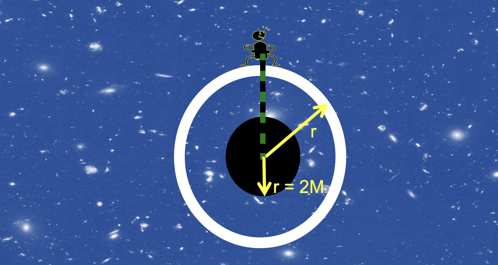

Forrige side🙂 🙁3 observatørerPADLET

$$\Delta r_\mathrm{sh}=\frac{\Delta r}{\sqrt{\sst}}$$ Ser du at denne fysiske avstanden Δrsh mellom skallene med avstand Δr blir uendelig lang ettersom r nærmer seg hendelsehorisonten? Fra et gitt skall er det altså uendelig langt ned til hendelsehorisonten målt med meterstaver! Husker du figuren over når vi prøvde å senke en stav ned for å finne r? Ser du nå hvorfor koordinatet r ikke er en normal “avstand” for en skallobservatør?